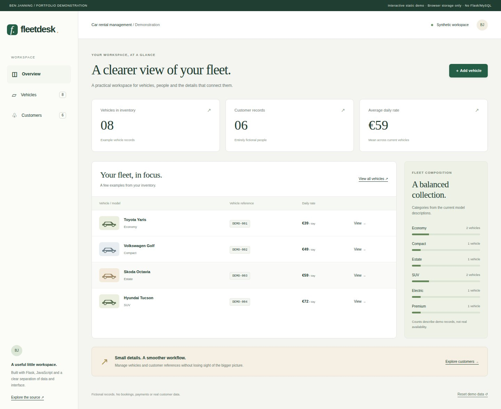

01 — Web application
Car rental management
A polished workspace for vehicle inventory and customer records, with a tested Flask API and an explicitly static public demonstration.
I’m Ben. I connect data, software and practical business thinking to build things people can understand and use.
Python · SQL · Web applications · Statistical analysis

From a business question
to a practical technical solution.
Working applications, analytical investigations and the decisions behind them.
A polished workspace for vehicle inventory and customer records, with a tested Flask API and an explicitly static public demonstration.
Explore a public dataset, compare classifiers and examine the limits of model evaluation.
A complete demonstration booking journey, from dates and room cards to guest details and confirmation.
Compare plant-growth treatments using visual exploration and statistical inference.
Implement five sorting algorithms and compare them using verified, repeatable measurements.
Use summary statistics and visual exploration to reveal patterns in the Iris dataset.
Every visual comes from a running application or an actual dataset. Each case study explains what was verified and where the limits are.
I’m interested in the space where technology meets a real business need.
My background combines computing and data analytics study at Atlantic Technological University with commercial experience. These projects show how I work with data, build applications and communicate technical ideas clearly.
I’m interested in data analytics, software development, business intelligence, solutions engineering and technology-focused commercial roles.
Explore the source behind the work ↗Capabilities demonstrated in the projects above.
Python, pandas, NumPy, SciPy, statsmodels, scikit-learn and Jupyter.
Exploration · Statistical testing · ClassificationFlask, REST APIs, SQL/MySQL, Node.js, Express, EJS, JavaScript and HTML/CSS.
Interfaces · Data access · Application workflowsMatplotlib, Seaborn, Git, reproducible experiments and straightforward documentation.
Visual evidence · Testing · Technical communication